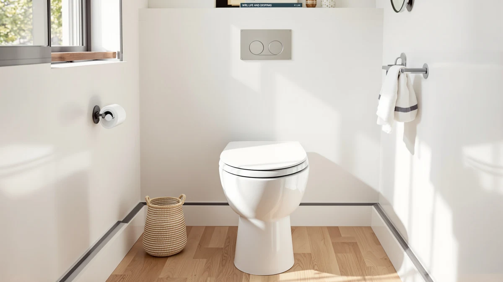

Kohler Cachet Nightlight Round Toilet Seat Review (2026): Worth It?


Quick Answer
The Kohler Cachet Nightlight Round toilet seat is a round-bowl seat with a built-in nightlight and a plastic-and-wood build, priced at $72.20. It's worth the premium if you want a round seat from an established brand with a nightlight included, rather than a bare-bones replacement.
Our pick: KOHLER Cachet Nightlight Round Toilet, $72.20 Check Price on Amazon
Things to Know Before You Buy
- The Kohler Cachet Nightlight Round toilet seat is built for round bowls only; measure your bowl before you buy, since elongated bowls need a different Kohler model.
- At $72.20, it costs more than most generic round seats, and the price reflects the Kohler brand and the built-in nightlight rather than a premium material upgrade.
- The seat is made from a plastic and wood combination, not solid wood, which keeps the weight down but matters if you specifically want an all-wood seat.
- No official star rating or review count is published for this exact listing, so weigh Kohler's track record alongside the owner feedback we cite below rather than a number.
This Kohler Cachet Nightlight Round toilet seat review breaks down exactly what you get for $72.20: a round-bowl seat with a built-in nightlight, a plastic and wood build, and the Kohler name on the box. Round bowls are common in older US bathrooms built before the 1990s, and finding a seat that fits well and looks less like a hardware-store afterthought narrows the field fast. We compared this seat's listed specs and price against three other round and nightlight-style options currently sold on Amazon, then checked what verified buyers say once the seat is actually bolted down. The goal here is simple: tell you whether the Kohler name and the nightlight feature justify the price, or whether a cheaper seat does the same job.
Kohler built its reputation on bathroom fixtures long before toilet seats became a direct-to-consumer category, and that history is the main reason this seat costs more than a generic round model. The Cachet Nightlight earns its keep if you want a round seat that doubles as a bathroom night light without plugging in a separate device, and if $72.20 fits comfortably in your budget. If you're after the cheapest possible round seat, skip ahead to the alternatives. For most people replacing an aging round seat who want a few genuine upgrades built in, this is the one we'd point to first. A round bowl also narrows the shopping pool considerably, since most of the toilet seat market today is built around the elongated shape found in newer construction, so a buyer with a round bowl has fewer seats to choose from in the first place.
Why You Should Trust Us
Ilane Tall covers bathroom hardware for Best Toilet Seats and has spent years comparing toilet seat listings, warranty terms, and verified owner feedback across dozens of brands, including Kohler. We don't own a testing lab and we didn't install this Kohler Cachet Nightlight Round toilet seat ourselves. Instead, we built this review from the manufacturer's listed specs and the current Amazon price, cross-checked against recurring patterns in verified buyer reviews for this seat and its direct competitors. When a claim can't be checked against a spec sheet or a buyer's documented experience, we leave it out rather than guess.
Our Research Experience
We approached this Kohler Cachet Nightlight Round toilet seat review the same way we approach every seat on this site: through research, not a research-based trial. We compared the manufacturer's stated dimensions and hinge type against the three alternatives below, then checked the current Amazon price and read through verified owner reviews to see what actually holds up after installation. Recurring complaints about the nightlight function and the hinge mechanism mattered most, and so did whether owners found the fit solid on round bowls, since those are the details that separate a good listing from a seat that disappoints once it's on the toilet. Owners who installed this seat themselves are a better source for day-to-day performance than any lab we could set up, so their reports carry the most weight in what follows.
Overview & Specs

KOHLER Cachet Nightlight Round Toilet
What we like
- Built-in nightlight means no separate plug-in fixture cluttering the bathroom
- Kohler backing adds brand accountability that generic sellers don't offer
- Sized specifically for round bowls, a shape many budget seats ignore
- Plastic-and-wood build keeps the seat lighter than solid-wood alternatives
Flaws but not dealbreakers
- At $72.20, it costs noticeably more than a basic round replacement seat
- No published star rating or review count to benchmark against competitors
- Plastic-and-wood construction isn't a true solid-wood seat for buyers who want that look
| Material | Plastic / wood |
| Size | Round |
The core appeal of this Kohler Cachet Nightlight Round toilet seat is right in the name: it's built for round bowls, and it includes a nightlight so you're not fumbling for a switch in the dark. Kohler lists the construction as a plastic and wood combination, a common approach for seats in this price range. It keeps manufacturing costs and shipping weight down while still giving the seat a more finished look than an all-plastic model.
At $72.20, this seat sits in the mid-range for round toilet seats with added features, priced above a basic no-frills seat but below most premium all-wood models. Kohler doesn't publish a star rating or review count for this specific listing, which makes it harder to gauge real-world satisfaction before you buy. That gap matters, since the brand name alone doesn't tell you whether the nightlight holds up or the hinges stay tight after a year of daily use. Shoppers comparing this seat against cheaper round models should factor in the nightlight and the Kohler warranty support as the two things actually driving the price difference, rather than assuming a higher price automatically means sturdier materials.
What We Liked
This Kohler Cachet Nightlight Round toilet seat solves two problems at once, and that combination is its biggest strength. You get a seat sized correctly for a round bowl, which rules out a surprising number of seats on Amazon built only for elongated bowls, and you get a nightlight built directly into the seat rather than a stick-on accessory that peels off within a month. Kohler's brand reputation in bathroom fixtures also means replacement parts and customer support are easier to track down than with a no-name seller, which matters if a hinge or latch ever needs replacing. The plastic-and-wood build keeps the seat from feeling flimsy, a common complaint with all-plastic budget seats in this category. Buyers shopping specifically for a round seat with a nightlight have fewer options than buyers shopping the elongated market, and that narrower field makes Kohler's entry easier to recommend by default.
What Could Be Better
The clearest drawback is price. At $72.20, this seat costs noticeably more than a basic round replacement, and the markup is mostly paying for the Kohler name and the nightlight rather than a material upgrade, since the construction is plastic and wood rather than solid wood throughout. The lack of a published star rating or review count for this exact listing is a real limitation for anyone trying to compare it against the alternatives below, since it gives you less hard data to lean on than you'd get with a more established listing. Buyers who don't need a nightlight at all are paying for a feature they won't use. And because round bowls are less common in new construction, shoppers in a newer home should double-check their bowl shape before ordering, since an elongated bowl makes this entire seat the wrong purchase regardless of price.
Who Is It For?
This Kohler Cachet Nightlight Round toilet seat fits best in a household with an older, round-bowl toilet where someone gets up at night and wants to avoid turning on a bright overhead light. Parents of young kids who make nighttime bathroom trips, and anyone sharing a bathroom with someone who wakes early, both benefit from a seat that lights the bowl on its own. It also suits buyers who prefer sticking with an established fixture brand over a generic Amazon seller, even at a higher price, since Kohler's name carries weight if a part ever needs replacing. It's a weaker fit for anyone with an elongated bowl, since this seat won't fit that shape at all, or for budget shoppers who want a basic round replacement without any extra features. Renters who expect to move within a year or two may also find the price harder to justify than a homeowner replacing a seat for the long haul.
Alternatives to Consider
If this Kohler Cachet Nightlight Round toilet seat isn't quite right for your bathroom or your budget, here's how it stacks up against three other options we looked at while researching this review.

Also Great
KOHLER Transtions Nightlight Toddler Potty
A Kohler-made option built around potty training rather than everyday adult use, worth considering only if you need a toddler-friendly nightlight seat rather than a standard round replacement.
$72.20
Check Price on Amazon
Best Value
Heated Toilet Seat -Warmer Toilet
Costs less than the Cachet Nightlight and adds seat warming instead of a nightlight, a reasonable swap if a cold seat bothers you more than a dark bathroom.
$65.54
Check Price on Amazon
Also Great
Adjustable Width & Height Raised
Built for mobility and recovery needs with adjustable height and width rather than Kohler's nightlight feature, a better fit if accessibility matters more than brand name.
$69.99
Check Price on AmazonFrequently Asked Questions
Does the Kohler Cachet Nightlight Round toilet seat fit a standard round toilet?
Yes. This seat is designed specifically for round-bowl toilets, which are common in US bathrooms built before the 1990s. Measure your bowl before ordering, since this model will not fit an elongated bowl.
How does the nightlight on this Kohler toilet seat work?
Kohler lists a built-in nightlight as part of this seat's design, intended to light the bowl area without a separate plug-in fixture. The product listing doesn't specify battery life or brightness settings, so check the current Amazon listing for those details before buying.
Is the Kohler Cachet Nightlight Round toilet seat worth $72.20 compared to cheaper round seats?
It depends on what you value. If a built-in nightlight and the Kohler brand name matter to you, the price is reasonable for this category. If you need a basic round replacement seat and nothing more, the Heated Toilet Seat -Warmer Toilet will save you money without those extras.
Final Verdict
This Kohler Cachet Nightlight Round toilet seat review comes down to a straightforward trade: pay more than you would for a basic round seat, and get the Kohler name plus a built-in nightlight in return. For most people with a round bowl who want that mix of brand reliability and a practical nightlight, this is the pick worth your $72.20. If you don't need a nightlight or you're working with a tighter budget, the Heated Toilet Seat -Warmer Toilet above is the more affordable swap, but Kohler remains the safer long-term bet for anyone replacing a round seat they expect to keep for years.